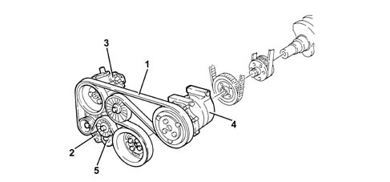
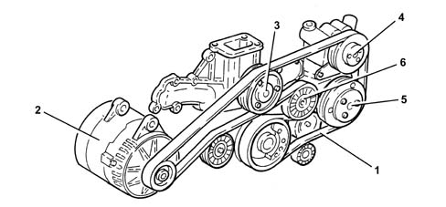

1092G SINGLE DRIVE BELT FOR VARIOUS ENGINE COMPONENTS
- Path
- Descriptions > 10 ENGINE UNIT > 1092 VARIOUS ENGINE COMPONENT CONTROLS > 1092G SINGLE DRIVE BELT FOR VARIOUS ENGINE COMPONENTS
- Kind
- system description
- Applies to
- engines: 2.0 JTS, 3.2 V6; all production periods
- Interactive page
- https://sloeber94.github.io/elrnDB-aGt/en/#/125000317
Applies to: engines: 2.0 JTS; all production periods
CONSTRUCTION FEATURES
The poly-V type belt (1) drives the alternator (2), the power assisted steering pump (3) and the air conditioning compressor (4).
There is an automatic tensioner (5) which means that there are no planned maintenance operations.

Applies to: engines: 3.2 V6; all production periods
CONSTRUCTION FEATURES
Poly-V type (1); drives the alternator (2), water pump (3), power steering pump (4) and air conditioning compressor (5).
There is an automatic tensioner (6) which means that there are no tensioning operations.
